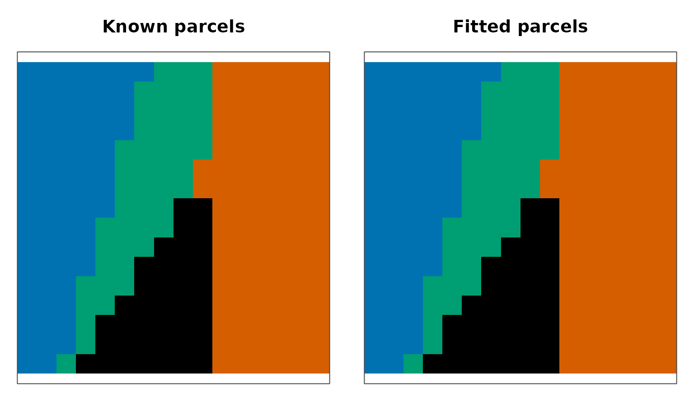

What problem are you solving?
A 4D neuroimaging dataset gives you a time series at every voxel.
Many analyses become easier when neighboring voxels with similar signals
are replaced by a smaller set of spatially coherent parcels.
cluster4d() performs that reduction while retaining the
mask geometry, final labels, feature means, and physical centroids
needed downstream.
This first workflow uses a small simulated brain volume with known parcels. The known answer lets you learn the object model and verify the result before moving to your own NIfTI data.
What goes in?
You need a NeuroVec containing x × y × z × time data and
a NeuroVol mask. Only finite mask values greater than zero
are included. Here, the generator returns both objects plus one
ground-truth label per included voxel.
syn <- generate_synthetic_volume(
scenario = "gaussian_blobs", dims = c(16, 16, 8),
n_clusters = 4, n_time = 40, noise_sd = 0.08, seed = 42
)
c(spatial_dimensions = paste(syn$dims, collapse = " x "),
time_points = dim(syn$vec)[4], masked_voxels = length(syn$truth))
#> spatial_dimensions time_points masked_voxels
#> "16 x 16 x 8" "40" "2048"How do you make a first parcellation?
Choose a target number of parcels and a method. ReNA is a useful
first pass for this example because it aggregates adjacent regions
directly. The target is not a promise for every method, so inspect
actual_k after fitting.
fit <- cluster4d(
syn$vec, syn$mask, n_clusters = 4, method = "rena",
connectivity = 26, parallel = FALSE
)
c(method = fit$method, requested_k = fit$parameters$n_clusters_requested,
actual_k = fit$actual_k)
#> method requested_k actual_k
#> "rena" "4" "4"
Known simulated parcels and the fitted ReNA partition on the middle axial slice. A one-to-one maximum-overlap assignment aligns arbitrary fitted IDs to the known colors only for this diagnostic view.
On this deliberately easy fixture, the fitted partition matches the known partition exactly (adjusted Rand index = 1.000). That result checks the example; it is not a general performance claim about ReNA or evidence that four parcels is appropriate for real data.
How do you check the object?
validate_cluster4d() checks the result schema and
independently recomputes centers and geometry when you supply the
original inputs. It answers “is this a consistent result?”, not “is this
a scientifically useful parcellation?”
check <- validate_cluster4d(fit, syn$vec, syn$mask)
check[c("valid", "warnings", "errors")]
#> $valid
#> [1] TRUE
#>
#> $warnings
#> character(0)
#>
#> $errors
#> character(0)The object contains contiguous voxel labels in mask order, a clustered volume for plotting or export, and final centers in the original time-series space.
Where should you go next?
- Read Choose parameters to learn what K and spatial weighting change.
- Read Compare methods to compare methods on identical inputs.
- Read Validate and compare to separate structural validity from quality estimands.
- Read Visualize and export to inspect slices and write a NIfTI label map.